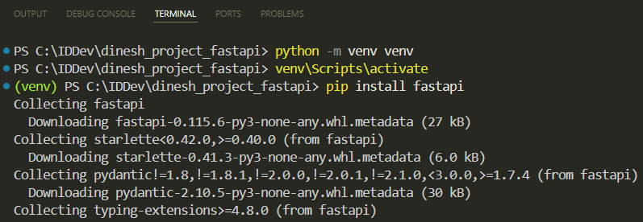
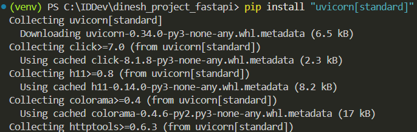
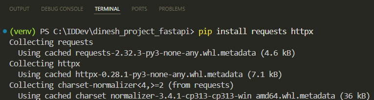
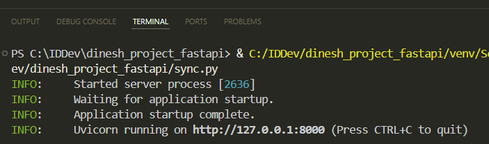
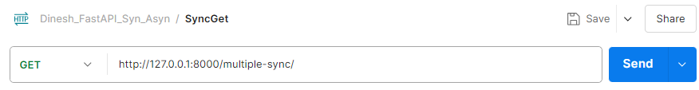
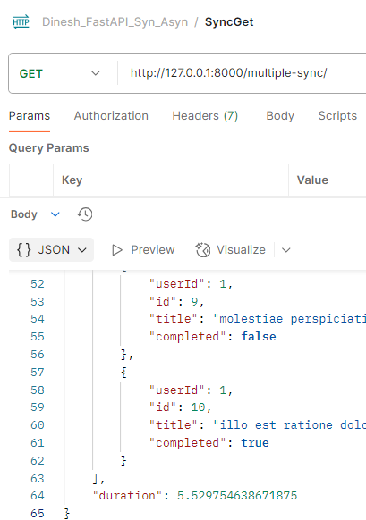
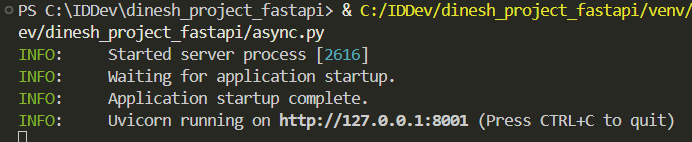
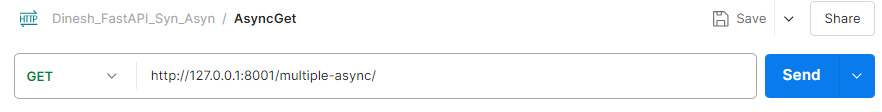
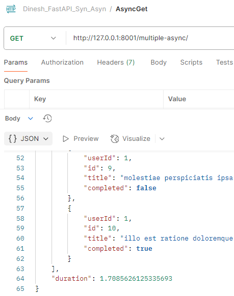

Evaluating FastAPI Performance with Sync and Async Endpoints
FastAPI is a Python-based framework designed to build APIs. We'll install FastAPI and explore the benefits of asynchronous programming, which allows tasks to be handled concurrently, leading to more efficient response times. By creating both synchronous and asynchronous endpoints, we'll test and compare their performance.
Set Up the FastAPI Environment in Windows
1 Open the terminal in Visual Studio Code and type: python -m venv venv
This creates a virtual environment. Using virtual environments ensures that the dependencies for one project don't interfere with the dependencies of other projects.
2 Activate the virtual environment: venv\Scripts\activate
3 Once the virtual environment is activated, you can install FastAPI using this command: pip install fastapi

4 FastAPI requires an ASGI server to run, such as Uvicorn. You can install it with: pip install "uvicorn[standard]"

ASGI (Asynchronous Server Gateway Interface) is a specification for building and running web applications in Python that support asynchronous programming. It allows for handling multiple tasks concurrently, making it ideal for high-performance applications.
5 To install the necessary libraries for our synchronous and asynchronous scripts, use the following command: pip install requests httpx

Create a Synchronous Endpoint with FastAPI
1 Create a file named sync.py.
2 Import the necessary components:
from fastapi import FastAPI
import requests
import time
-
FastAPI: Framework for creating the API. -
requests: For making HTTP requests. -
time: For measuring the duration of processing.
3 Create the FastAPI instance:
app = FastAPI()
4 Define the fetch_data function:
def fetch_data(url):
response = requests.get(url)
return response.json()
fetch_data(url): Makes an HTTP GET request to the specified URL and returns the JSON response.
5 Create the synchronous endpoint:
@app.get("/multiple-sync/")
def multiple_sync():
urls = [
"https://jsonplaceholder.typicode.com/todos/1",
"https://jsonplaceholder.typicode.com/todos/2",
"https://jsonplaceholder.typicode.com/todos/3",
"https://jsonplaceholder.typicode.com/todos/4",
"https://jsonplaceholder.typicode.com/todos/5",
"https://jsonplaceholder.typicode.com/todos/6",
"https://jsonplaceholder.typicode.com/todos/7",
"https://jsonplaceholder.typicode.com/todos/8",
"https://jsonplaceholder.typicode.com/todos/9",
"https://jsonplaceholder.typicode.com/todos/10"
]
start_time = time.time()
results = [fetch_data(url) for url in urls]
end_time = time.time()
return {"results": results, "duration": end_time - start_time}
The code:
-
Defines an endpoint
/multiple-sync/. -
Defines a list of URLs to fetch data from.
-
Captures the start time.
-
Loops through the URLs and fetches data synchronously using the
fetch_datafunction. -
Captures the end time.
-
Returns the fetched results and the total duration taken to process the requests.
The fetch_data function performs the requests one at a time in a blocking manner. This means each request is completed before the next one starts. The line results = [fetch_data(url) for url in urls] calls fetch_data in each iteration of the loop, gets the JSON response for each request, stores it in results, then moves to the next request.
JSONPlaceholder is a free online REST API that you can use for testing and prototyping. These URLs in our code are endpoints provided by JSONPlaceholder, each returning a JSON object representing a to-do item.
6 Run the FastAPI application:
if __name__ == "__main__":
import uvicorn
uvicorn.run(app, host="127.0.0.1", port=8000)
Create an Asynchronous Endpoint with FastAPI
1 Create a file named async.py.
2 Import the necessary components:
from fastapi import FastAPI
import httpx
import asyncio
import time
-
FastAPI: Framework for creating the API.
-
httpx: For making asynchronous HTTP requests.
-
asyncio: For writing concurrent code using
asyncandawaitkeywords. -
time: For measuring the duration of processing.
3 Create the FastAPI instance:
app = FastAPI()
4 Define the asynchronous data fetching function:
async def fetch_data(client, url):
response = await client.get(url)
return response.json()
This function takes an HTTP client and a URL, sends a GET request to the URL, and returns the JSON response.
-
async defkeyword defines an asynchronous function. -
client.get(url)sends an HTTP GET request to the specified URL. Theawaitkeyword allows the function to pause and wait for the response while other tasks continue to execute concurrently. For example, while onefetch_datacall is waiting for a response from an HTTP GET request, anotherfetch_datacall can send another HTTP request.
5 Create the asynchronous endpoint:
@app.get("/multiple-async/")
async def multiple_async():
urls = [
"https://jsonplaceholder.typicode.com/todos/1",
"https://jsonplaceholder.typicode.com/todos/2",
"https://jsonplaceholder.typicode.com/todos/3",
"https://jsonplaceholder.typicode.com/todos/4",
"https://jsonplaceholder.typicode.com/todos/5",
"https://jsonplaceholder.typicode.com/todos/6",
"https://jsonplaceholder.typicode.com/todos/7",
"https://jsonplaceholder.typicode.com/todos/8",
"https://jsonplaceholder.typicode.com/todos/9",
"https://jsonplaceholder.typicode.com/todos/10"
]
start_time = time.time()
async with httpx.AsyncClient() as client:
tasks = [fetch_data(client, url) for url in urls]
results = await asyncio.gather(*tasks)
end_time = time.time()
return {"results": results, "duration": end_time - start_time}
-
Defines a GET endpoint
/multiple-async/that will handle asynchronous requests. -
Creates a list of URLs to fetch data from.
-
Records the start time to measure the duration of processing.
-
Creates an asynchronous HTTP client using
httpx.AsyncClient. -
Creates a list of tasks to fetch data from each URL concurrently.
-
await asyncio.gather(*tasks)runs all the tasks concurrently and waits for them to complete, collecting the results. -
Records the end time and calculates the duration of the operation.
-
Returns the fetched results and the duration.
In summary:
-
async def fetch_data(client, url): Makes the individual requests asynchronous, allowing them to run concurrently. -
async with httpx.AsyncClient() as client: Ensures that all client requests are handled asynchronously. -
tasks = [fetch_data(client, url) for url in urls]andawait asyncio.gather(*tasks): Runs all tasks concurrently, collecting all the responses once they're all completed.
These components work together to make your application handle multiple HTTP requests concurrently.
6 Run the FastAPI application:
if __name__ == "__main__":
import uvicorn
uvicorn.run(app, host="127.0.0.1", port=8001)
Test the Synchronous and Asynchronous Endpoints
We'll test the endpoints using Postman.
Testing the Synchronous Endpoint
1 Run sync.py.

2 In Postman, add a new GET request. I created a collection Dinesh_FastAPI_Syn_Asyn and added a new request. Enter the URL for your synchronous endpoint: http://127.0.0.1:8000/multiple-sync/

3 Click Send. You can find the response time in milliseconds (ms) just below the response body:

For me, the total time taken was 5.53 seconds.
Testing the Asynchronous Endpoint
1 Run async.py.

2 In Postman, add a new GET request. Enter the URL for your asynchronous endpoint: http://127.0.0.1:8001/multiple-async/

3 Click Send. You can find the response time in milliseconds (ms) just below the response body:

For me, the total time taken was 1.71 seconds.
Comparing both:
-
Synchronous Duration: 5.53 seconds
-
Asynchronous Duration: 1.71 seconds
As you can see, the asynchronous endpoint (/multiple-async/) took noticeably less time to complete compared to the synchronous endpoint (/multiple-sync/). This demonstrates the performance benefits of asynchronous programming in FastAPI.